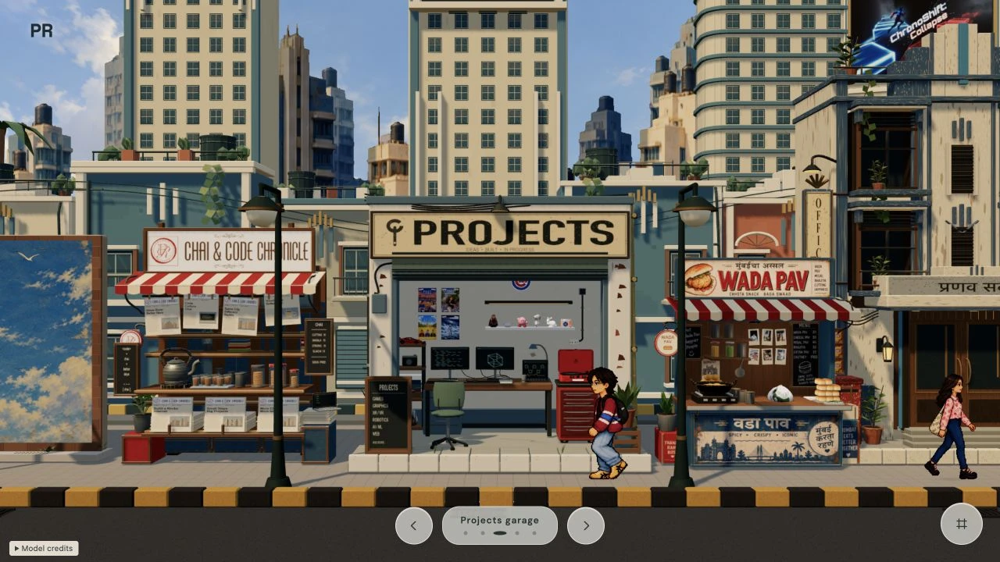
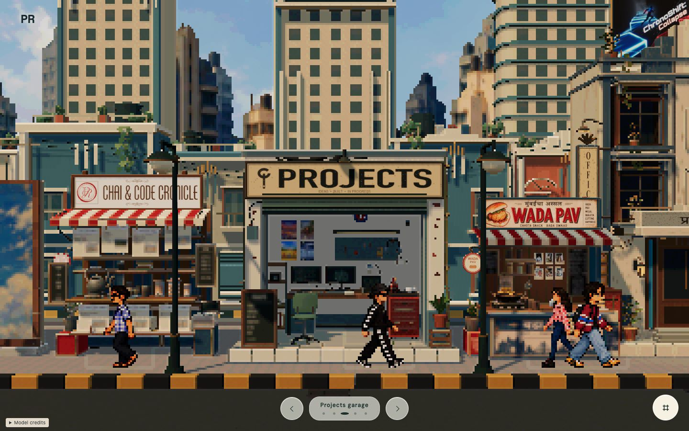
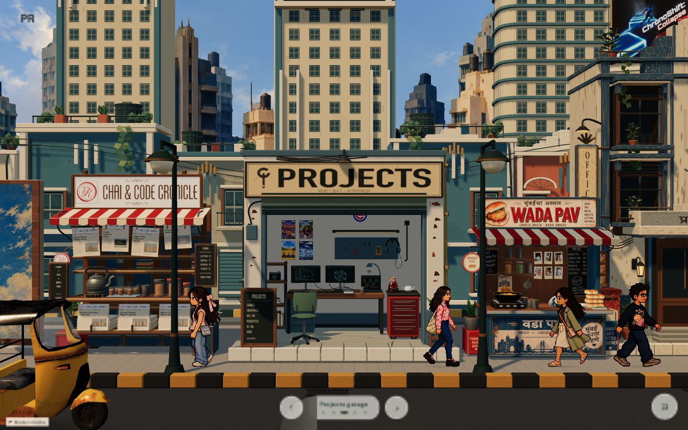
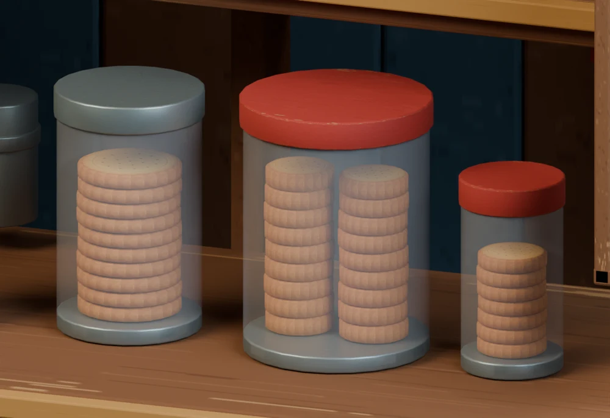
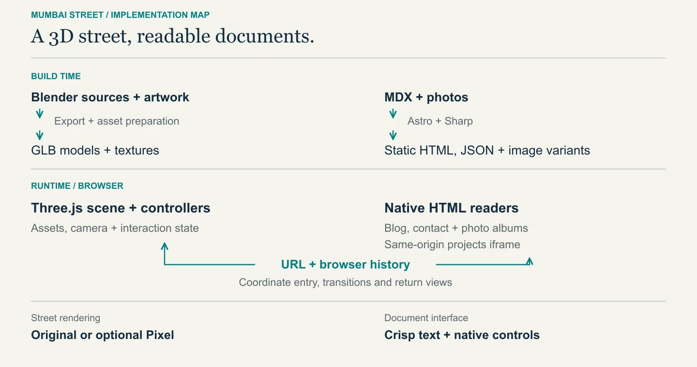

Mumbai Street
- Category
- Creative Technology
- Year
- 2026
- Role
- Creative direction & AI-assisted engineering
A portfolio with a sense of place
A Mumbai street, with working web interfaces behind its storefronts.
Open my projects on a garage computer. Pick up an article at the chai stall. Unwrap two wada pavs to find my contact details.
The design rule: the street handles discovery; the browser handles reading, links, and history. Three.js gives the portfolio a place. Astro and native HTML keep its content usable.
My contribution: I led the creative and technical direction, configuring specialist AI agents for environment design, technical art, and implementation. I gave each role shared context, scoped handoffs, and clear review criteria, then reconciled their recommendations into focused revisions. I also drove rendering and asset optimization through capped device-pixel ratio, cached shadow maps, and targeted texture budgets for miniature props—balancing visual fidelity, readability, and rendering cost.
One camera, many destinations
Selecting Contact halfway through the garage entrance should hand over control cleanly. The route coordinator releases the previous experience, then checks whether its navigation token is still current after asynchronous work. An obsolete request cannot resume and acquire the camera.
Nested Contact views share one street-camera snapshot, so moving between the paper, stall, and photo album preserves a coherent return point. Controllers also own input suspension and transition cleanup.
A race you can interrupt
One camera. The newest request.
Request two destinations before resolving their releases. Watch which request gets the camera.
requestToken === latestToken Latest token Destination
Projects
No request yet.
Camera owner
StreetReady for a request.
Destination
Contact
No request yet.
- Street owns the camera. No releases are pending.
The latest request may acquire the camera only after releases complete; an older token is rejected.
Evidence: the routing regression exercises the actual coordinator with competing requests and verifies that only the latest destination enters. The diagram illustrates that rule; the regression checks implementation behavior.
The newspaper is an interface
Two wada pavs had a surprisingly demanding job description: arrive wrapped, reveal my contact details, and leave a usable surface behind. Working with Codex Astra, I kept revising both the folds and the way I described success. Bounds checks could pass while the paper still looked like a boat.
Five recovered versions / One very particular lunch
I was trying to serve lunch.
Getting a newspaper to open convincingly became a lesson in changing the representation—and writing a better brief.
01 / 05
Start with the edges.
A first sheet with raised margins kept the food and print visible. It did not yet conceal a parcel.
Brief, review & timing
I had a surface. I still needed the moment of discovery.
What changed in my thinking
The brief needed to describe the reveal, not just the shape of the paper.
02 / 05
Four flaps. A different problem.
A flat base and four folding panels made each part of the opening easier to direct.
Brief, review & timing
The wrapper could open, but the separate pieces made it read like a constructed box.
What changed in my thinking
More control over the parts did not make them feel like one sheet.
03 / 05
One mesh. Lunch still visible.
One connected sheet replaced the panel construction; its surface opened through procedural deformation.
Brief, review & timing
The continuity helped. Its cup-like starting form still left the food exposed.
What changed in my thinking
A better representation was progress, not an automatic finish line.
04 / 05
Finally, hide the lunch.
The procedural wrapper became a covered parcel, then spread into the newspaper carrying my contact details.
Brief, review & timing
The reveal now made sense. Getting the folds to feel intentional remained its own project.
What changed in my thinking
I needed to direct the whole gesture, including what the camera would reveal.
05 / 05
The fold I chose to keep.
I moved the fold into an editable Blender source: 25 held poses, exported as a two-second GLB animation.
Brief, review & timing
The chosen local version starts opening during the slow overhead camera push. Contact links wait until both are ready.
What changed in my thinking
Change the representation when tuning stops helping. Then check the geometry, timing, and final reading surface.
Assets ready at entry · schematic
Links ready after paper + camera finish. Slow asset loads can extend this timing.
Re-rendered from saved geometry with the same camera, current artwork and food; earlier motion normalized for comparison. Latest: the local October 25 export. Source notes below.
Watch the full 20-second sequence ↗ · GIF version

What these versions can—and cannot—show
These are recovered implementations, rendered again for this comparison, rather than screenshots taken on each original date. Each clip samples 25 poses from a fixed camera with the current artwork and food. Earlier motion is normalized into a two-second comparison; these clips do not preserve the original runtime timing or camera transitions.
- September 19
707010f· Raised margins; the food is deliberately visible. This is not the separately documented rejected “boat” experiment.- September 30
467087a· First committed base-and-four-panel version; the worklog records the work on September 29.- October 11
8022f78· The recovered continuous procedural sheet.- October 15
420e1a6· The committed covered-parcel version, following local work recorded on October 11.- October 25
- Local working copy · Blender-authored GLB with 25 held poses at 12 pose intervals per second. The camera cue belongs to the current application integration, not this fixed-camera comparison.
The chosen fold is an art-directed, cloth-assisted sequence. Its topology and clearance checks do not establish physically exact cloth or prove the absence of every possible self-intersection.
The version I have landed on moves fold-making into Blender: a cloth-assisted study, editable poses, and manual cleanup become a two-second GLB animation with 25 held poses. The browser plays authored geometry instead of calculating a radial fold formula. The newspaper image stays replaceable without re-exporting the motion.
Timing completes the interaction. The parcel stays closed through the camera approach, then opens during the overhead push. Native HTML contact links and food dragging become active only when both the final pose and camera are ready. Once revealed, the paper stays open on return visits.
Evidence: the October 25 local worklog records checks of all 25 exported poses and 18 playback lifecycle scenarios, including interrupted entry and return visits. Framing checks cover five aspect ratios. This latest wrapper is local; the public city may show the preceding version.
Sharp artwork, correct depth
A pixelated street still needs legible signs. Drawing sharp artwork over the final image would make it visible through buildings. The optional Pixel pipeline instead rebuilds full-resolution depth before drawing selected artwork with depth testing.


Original Pixel- 01 / COLOR
Build the pixel image
Pixelated scene → output conversion → color quantization
- 02 / DEPTH
Rebuild occlusion
Clear depth. Render visible geometry with color writes disabled.
- 03 / ARTWORK
Draw the sharp layer
Selected artwork stays crisp and obeys the new depth buffer.
Pipeline schematic, not render-target captures. Extra full-resolution passes add work; pixel styling alone establishes no speed gain.
Three.js supplies the pixelated and output passes; the project integrates them with color quantization, responsive pixel sizing, sharp artwork, and failure recovery.
Evidence: renderer checks exercise pass ordering and restoration after failure using a mock renderer. The saved comparison shows appearance at two capture moments. GPU correctness and speed require separate device measurements.
AI-assisted work with a definition of done
A useful handoff names the allowed change, the surrounding work to protect, and the evidence required for acceptance. One saved chai-stall revision makes that concrete:
A saved revision / Chai stall
Ground the biscuits.
Preserve the stall.
- Change
- Golden stacks, clear glass, visible headspace.
- Keep
- Jar positions, architecture, signage, newspapers.
- Accept
- Two-angle review, preservation check, GLB reimport.
20 surrounding meshes preserved ↗Inspect the round-trip report ↗

The preservation report records unchanged surrounding meshes and jar structure. A separate GLB round-trip report checks bounds, materials, and article metadata. Visual review decides whether the repair looks convincing.
The configured workflow assigns different review lenses to an architect, set designer, and Blender technician. A World Art Director consolidates the findings; one implementer edits the scene. I set direction and accept or revise the result.
Inspect the configured modeling workflow
Configured modeling workflow
Clear responsibilities, one scene writer, and a reviewable result.
I set the brief
Intent, references, preservation rules, acceptance criteria.
Three review lenses · review only
Architect
Placement, silhouette, sightlines.
Set designer
Composition, props, physical support.
Blender technician
Geometry, transforms, export contract.
World Art Director
Resolve conflicts. Consolidate one bounded brief.
One scene implementer
Apply the agreed changes.
Export + visual checks
Reimport, inspect, test interactions.
I accept or revise
Revisions return to the brief
These are Markdown role instructions for AI assistants. Actual execution varies by task; the worklog records interruptions as well as completed reviews. One garage pass continued in the main task after usage limits interrupted a specialist handoff.
What this project demonstrates
Graphics knowledge applied across an application: coordinate spaces become interfaces; render-pass choices preserve spatial logic; ownership rules keep interaction coherent. The same discipline carries into delegation—clear boundaries, reviewable changes, and explicit acceptance evidence.
Next engineering pass: controlled CPU/GPU profiling, broader physical-device testing, remaining input/accessibility gaps, and full release validation.
Interview notebookMechanisms, math, tradeoffs & follow-up questions
I directed an AI-assisted portfolio presented as a Mumbai street. Three.js handles spatial navigation; Astro and HTML carry readable documents. The difficult decisions were giving the camera one owner, projecting printed contact rows into HTML targets, and preserving occlusion when mixing pixelated and sharp rendering. I used bounded briefs, specialist reviews, regression checks, and export evidence to guide substantial AI implementation. The project connects my computer graphics background with frontend state, content pipelines, and technical direction.
Trace a printed contact link from the paper to an HTML hit target.
- Explain
- UV → final paper point → world → clip → NDC → CSS pixels; enable after paper + camera readiness.
- Follow-up
- Which matrix changes if the whole stall moves? Why divide by w?
Explain what happens when Contact interrupts the garage entrance.
- Explain
- Release old owner; reject stale continuations; acquire new owner; restore one street snapshot.
- Follow-up
- What does a route token cancel, and what still needs explicit cleanup?
Keep a sign sharp while a building still hides it.
- Explain
- Pixel pass → output conversion → quantization → full-resolution depth → sharp artwork.
- Follow-up
- Why can Pixel mode cost more? How do CSS pixels differ from device pixels?
Separate arriving assets, revealed groups, and interaction readiness.
- Explain
- Two async workers; ordered reveal; partial failure; owned versus shared resources.
- Follow-up
- What happens when a texture finishes loading after its experience is disposed?
Explain why a passing bounds check did not fix the wrapper.
- Explain
- Procedural folds → Blender-authored morph targets; 25 exported poses, stepped playback, camera cue, visual + geometry checks.
- Follow-up
- What does disk topology prove? What would a physical cloth solver require?
Use the biscuit revision as a concrete example of technical leadership.
- Explain
- Goal, preservation rules, relevant reviewers, one scene writer, independent export evidence.
- Follow-up
- What did I direct? What did assistants implement? How did I decide it was complete?
System boundaries and the build/runtime split
The scene establishes where you are. HTML carries the content you came to read. Keeping that boundary lets an article remain selectable and scrollable while its newspaper still belongs to the street.
| Layer | Tools | Responsibility |
|---|---|---|
| Authoring | Blender, glTF / GLB | Editable assets, textures, scale, named anchors, export |
| World | JavaScript ES modules, Three.js, WebGL | Scene graph, camera, raycasting, materials, animation, rendering |
| Documents | Astro, MDX, HTML/CSS | Project pages, articles, accessible links and readers |
| Build | Vite, Sharp, Git/GitHub | Bundling, image variants, manifests, versioned changes |
The garage monitor hosts a same-origin project iframe. This creates an explicit boundary between scene navigation and document navigation: the street controls the camera and monitor placement; the embedded site owns its content and scrolling. The implementation also instruments semantic actions with PostHog, providing a foundation for measurement rather than evidence of an engagement gain.

The useful module boundaries are stagedLoader.js for arrival and reveal, main.js for route coordination, destination controllers such as contactExperience.js for camera/input ownership, and pixelRenderer.js for the optional presentation pipeline. These boundaries make a visual problem traceable to a specific responsibility.
Coordinate spaces, picking, and the asset contract
Local space, world space, screen space
Moving a stall should move its paper, camera target, and clickable contact rows together. Scattered world-coordinate constants would make every placement revision a small archaeological expedition.
The exported model therefore provides named markers such as Contact_PaperAnchor. A scene graph gives each object a transform relative to its parent. Composing those transforms produces its world transform. createContactLayout() derives positions, directions, the drag plane, and camera shots from that anchor.
For a local paper point, the projection is:
Here, includes the asset’s parent transforms, is the inverse camera transform, and is the projection matrix. Dividing by performs the perspective divide. Normalized device coordinates then become viewport-relative CSS coordinates:
screenX = (ndc.x + 1) × width / 2
screenY = (1 − ndc.y) × height / 2Screen Y increases downward, hence the reversal. A canvas offset must also be accounted for when positioning elements outside its coordinate system.
The contact rows start as rectangles in the newspaper artwork’s UV coordinates. Once the reveal and camera move finish, their corners map to the final planar paper surface, inherit the anchor transform, and project into HTML link targets. They remain inactive during the moving folds. This connects a printed advertisement to a real browser interaction without painting the entire document into WebGL.
Picking is the reverse journey
A pointer position is converted into normalized device coordinates; Three.js creates a camera ray and intersects scene geometry. The hit must resolve to an intended destination. Decorative foreground geometry, transparent sprite rectangles, and nested model children make “take the first intersection” an incomplete policy.
Input also needs intent: a tap must not fire after a drag or pinch. The picker tracks the pressed target, rejects movement of six CSS pixels or more, and suppresses multi-pointer gestures. Destination controllers suspend street interactions while they own the view.
What I learned: an asset is an interface contract. Names, scale, orientation, and transform inheritance matter as much as appearance. When the garage was enlarged and a neighboring stall moved, checks against exported markers and geometry helped keep screens, shutters, and camera framing aligned.
Interview checkpoint: why anchors instead of hardcoded positions?
An anchor expresses intent in the asset’s coordinate system. Its world matrix follows placement, rotation, and scale automatically. A hardcoded world point loses that relationship. The contact checks exercise translated/rotated layouts and five aspect ratios; they do not establish physical-phone readability. A bounding box is also too coarse for testing a camera path through an empty service opening—the path check uses exported triangles.
Asynchronous camera ownership and route-token reasoning
Consider this sequence: a visitor selects Projects, the garage entrance starts, and then they select Contact. If both experiences keep updating the camera, the result is a tug-of-war with easing functions.
The camera needs one active owner. The route coordinator releases the old experience before allowing another to acquire it. It also uses a monotonically increasing navigation token to reject stale asynchronous continuations.
Representative pseudocode, simplified from the coordinator:
const request = ++routeToken;
await releasePreviousExperience();
if (request !== routeToken) return;
await enterRequestedExperience();The important moment is after await. While one request waits, another can become current. Comparing tokens prevents the older request from resuming as though nothing changed. The actual coordinator checks after its awaited releases.
| Moment | Request A: Projects | Request B: Contact |
|---|---|---|
| A begins | Receives token 1; waits for release | — |
| B begins before A resumes | Token 1 becomes stale | Receives token 2 |
| A resumes | Fails token check; stops | Remains current |
| B continues | — | Enters after release and its own check |
The token rejects stale continuations. Controllers still have to stop obsolete motion, release input, and restore state; underlying network work needs its own cancellation support.
Nested Contact routes—paper, stall overview, and photo album—share one saved street camera position and target. Saving again at each subview would overwrite the return destination with a close-up. Reduced motion changes the transition duration while retaining the same final state.
What I learned: camera animation is a state-management problem. Camera phase, shutter position, lighting, route, and input availability are related state dimensions; one isOpen boolean cannot describe them all.
Interview checkpoint: why is releasing the previous owner not enough?
Releasing can itself be asynchronous. A request may become obsolete during that wait, so mutual ownership and stale-request rejection solve different parts of the race. Navigation checks cover interruption, shared Contact snapshots, restoration, and reduced-motion endpoints. They do not prove all asynchronous work is aborted.
Loading, readiness, failure handling, and resource lifetime
Download order and presentation order are different concerns. The road should establish the space before shops appear, even if a small skyline file finishes first.
createStagedLoader() runs two asynchronous workers over a priority-sorted job list. Loaded models are prepared while hidden. A separate sequence reveals road, pavement, lamps, shops, skyline, and details. Road and pavement are visual groups extracted from the same GLB.
// Representative structure; details omitted.
startTwoWorkers(prioritySortedJobs);
for (const stage of presentationOrder) {
const results = await resultsFor(stage);
await reveal(successfulRoots(results));
}Shop picking becomes available after the shop reveal. Destination choreography waits for complete scene readiness, and optional traffic starts afterward. This separates loaded, visible, interactive, and ready for a close-up.
A failed job records a failure and resolves its result so later stages can continue. Reduced motion preserves the sequence without the fade. Two workers are a conservative policy; they are not a measured optimum. JavaScript promises coordinate asynchronous progress—they do not create worker threads or remove decoding cost.
Resource lifetime is part of the feature
Removing a mesh from the scene does not free its GPU geometry, materials, textures, or render targets. Cleanup needs ownership rules. A temporary fade material can be disposed while its shared texture remains owned by the loaded asset.
The photo wall is a useful example: it borrows model meshes, creates replacement geometry/materials and an atlas, then restores borrowed state and releases its own allocations. Generation checks reject late asynchronous results after teardown; abort signals help where the loading operation supports them.
What I learned: a feature includes its exit path. Listeners, timers, observers, GPU allocations, and late arrivals need as much attention as the entrance animation.
Interview checkpoint: why not load everything with Promise.all()?
Starting everything at once gives less control over concurrent work and says nothing about reveal order. The queue and presentation sequence solve separate problems. The staged-loading configuration check verifies ordering, concurrency settings, timing values, and mesh grouping; historical browser observations cover selected loading flows. Neither proves a universal load time or arbitrary network-race correctness.
Render passes, color quantization, DPR, and measurement
Pixel mode integrates Three.js’s existing RenderPixelatedPass and OutputPass with a color-quantization shader. The design problem is preserving the street’s appearance while keeping selected signs and artwork useful at close range.
Why sharp artwork still needs depth
Drawing a crisp sign on top of the finished image makes it readable through a wall. The implementation instead reconstructs full-resolution depth before drawing selected artwork:
Pixelated scene → output conversion → color quantization
Clear depth → visible-geometry depth only → sharp artwork with depth testingThe depth-only pass disables color writes, preserving the composed image while recording nearer geometry. The sharp pass can then obey occlusion. Selected authored sprites are excluded from the coarse pass so a second pixelated silhouette does not remain behind them. A finally block restores the affected visibility, color-write flags, background, auto-clear, and shadow-update flag even if a pass fails.
Pixel size and color are separate controls
The block size is specified in CSS pixels and multiplied by device-pixel ratio. At DPR 2, a four-CSS-pixel block spans eight device pixels. The profile uses smaller blocks for mobile and close Contact views.
For a normalized color channel and channel levels, quantization is:
Sixteen levels per RGB channel allow 4,096 combinations before blending. Because the shader blends by strength , the final image is not restricted to those combinations. Tone mapping, output color-space conversion, and quantization are different operations; their ordering affects the result.
What I learned: a low-resolution style can still require extra full-resolution work. Pixel mode adds passes, so its appearance alone says nothing about performance. The fallback returns to Original mode if the optional pipeline cannot initialize or render.
Interview checkpoint: what would establish a performance improvement?
A controlled comparison on the same device, viewport, DPR, camera, and asset state, with cold/warm behavior identified. CPU submission time, GPU time, and frame intervals measure different things. The recorded mock-renderer checks exercise pass order, fallback, responsive profiles, and state restoration; they cannot establish GPU visual correctness or a frame-rate gain. Later sprite-specific visual acceptance remains separately tracked.
Changing the wrapper representation: authored motion, runtime state, and validation
Early corner bends and separate panels could satisfy simple bounds while missing the silhouette I wanted. The continuous procedural versions improved the surface, but attractive endpoints still hid awkward folds in between. The useful intervention was changing the representation and the brief together.
Author the shape; play the result
The current source is an editable Blender scene. A cloth-assisted study supplies a starting point; sculpted poses and cleanup give control over the final choreography. Export preserves a connected 4,225-vertex grid, its UVs, the closed basis, and 24 position-and-normal morph targets. One two-second Unwrap clip uses discrete interpolation to hold 25 poses at 12 poses per second.
poseIndex = min(24, floor(elapsedSeconds × 12))This is an explanation of the pose schedule. The adapter selects the corresponding clip time; it does not run a cloth solver in the browser. Baked normals support each shape. Bounds include every exported pose, and shadow/outline refreshes follow held-pose changes. Printed front and blank reverse share geometry and morph weights, with separate materials. The external newspaper texture can change independently; contact-row coordinates must still match its layout.
Two clocks, one useful reveal
The camera approaches for 1.8 seconds while the parcel stays closed. The two-second unwrap begins with the 4.2-second overhead push. Links and food dragging wait for both completion conditions. Leaving before the cue keeps the parcel closed; leaving after it starts lets playback finish. The final state and dragged food positions survive later visits until reload. Reduced motion selects the final pose immediately.
That split matters: arrival, animation completion, and interaction readiness are different states. A suspended or long approach frame must not consume the reveal before its cue.
What the checks establish
The current checks inspect all 25 actual exported poses for finite geometry, topology, concealment, clearance, and a flat serving/contact footprint. Four stretched pin corners initially produced needle-like edges; cleanup reduced the recorded maximum edge-length ratio from 20.26× to 3.72×, with a 4× regression ceiling. Eighteen lifecycle cases cover cue timing, interruption, return visits, and readiness. Source-workflow checks also verify that ordinary export preserves the saved scene and artwork replacement leaves the GLB unchanged.
These checks complement visual review. Connectivity and disk topology do not prove absence of self-intersection. This cloth-assisted, artistically cleaned sequence allows stretching; it is not an inextensible cloth simulation. Browser screenshots at phone dimensions are also distinct from testing a physical phone.
Historical mechanism: the procedural parcel
The October 15 saved implementation used a continuous 72 × 96 grid with radial compression, angular delays, and separate spread/flatten terms. Quintic smootherstep eased those terms; runtime updates recomputed normals and bounds. Its checks sampled 41 poses. That mechanism belongs to the historical parcel stage above, not the current Blender export.
What I learned: a stronger brief can change the representation, not just its parameters. “Pass the geometry checks” and “look like somebody unwrapping lunch” are separate acceptance criteria.
Delegation: a behavioral interview example
Use the biscuit brief to explain scope and acceptance. Use the wrapper to discuss changing a representation after visual failure. Use the interrupted garage handoff to explain adapting the workflow. In each answer, distinguish what I directed, what assistants implemented, and what the evidence established.
The role documents define shared context and distinct review responsibilities. They are a configured development protocol, not trained specialist models or a new agent platform. New assets can receive broader review; narrow revisions use the affected specialists. Review findings still need synthesis before one implementer changes the scene.
Visual credits and capture notes
The hero was captured from the live city on October 24, 2026. The rendering comparison uses October 17 development captures; the wrapper timeline re-renders dated source snapshots alongside the local October 25 GLB using one comparison camera and current artwork. These are comparison renders, not screenshots taken on the original dates. Earlier October 19 pose captures remain in the source archive. The timeline does not recreate the undocumented diagonal-curl failure. The architecture and pipeline diagrams explain the system; the camera model illustrates a rule rather than live telemetry. Small props visible in the street include adapted CC BY 4.0 models: LEGO Scarlet Witch by Ramón Ruiz, Art Reference: Utah Teapot by Smallpoly, and Chicago Cubs by Laurance Animations.